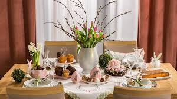

Witaj na mojej stronie poświęconej Wielkanocy!

Wielkanoc to jedno z najważniejszych świąt chrześcijańskich, obchodzone na całym świecie. W Polsce jest to czas radosnego świętowania, tradycji i rodzinnych spotkań.
W czasie Wielkanocy jemy m.in. baranki, jajka i mazurki, ozdabiamy domy pisankami i palmami, a w kościele święcimy pokarmy i błogosławimy paschaliki.